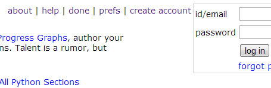
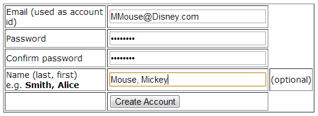
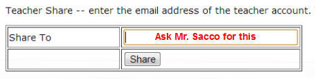

Singning up for CodingBat
Codingbat.com is a website that provides some good practice with various topics in Java. It has you create methods that will perform various programming tasks.
First go to the upper right corner of www.codingbat.com and select create account

From there sign up for an account. It says the name is optional, but to recieve credit you will have to provide your name.

After you've created the account you must link it to Mr. Sacco's. Log in and select the prefs on the main page. One of the options is called Teacher Share. This is where you will put the email account that Mr. Sacco has given you.

Once you've linked accounts you can start on your assignment. Make sure that you're always logged in when programming, otherwise you won't recieve any credit.